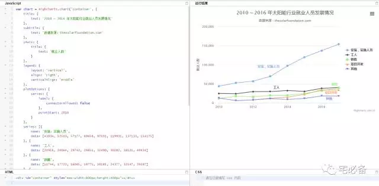
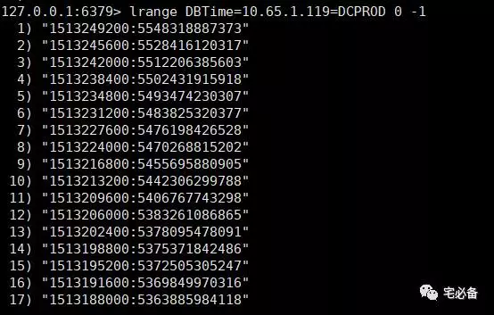
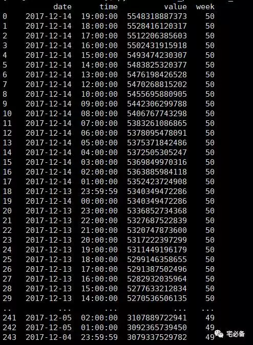
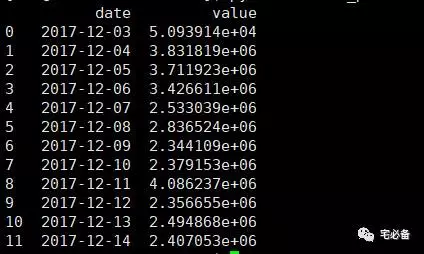
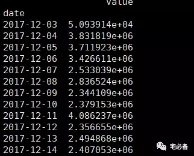
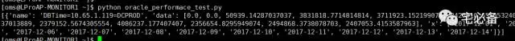
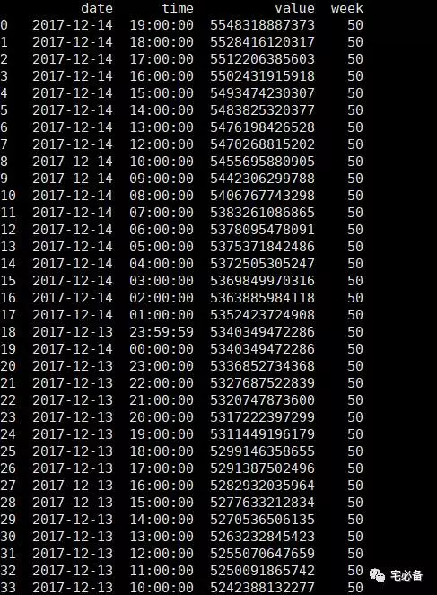
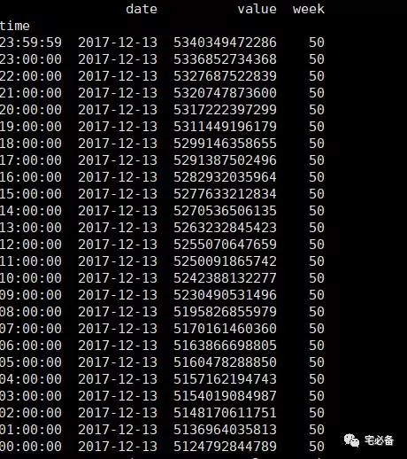
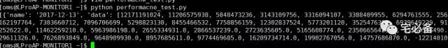

使用pandas处理数据获取Oracle系统状态趋势并格式化为highcharts需要的格式
2017-12-14 Oracle 宅必备
开发环境
操作系统:CentOS 7.4
Python版本 :3.6
Django版本: 1.10.5
操作系统用户:oms
数据处理:pandas
前端展示:highcharts
通过上面我们已经知道了如何使用Django获取数据库的系统状态信息并将其存入redis数据库
这节讲如何使用pandas处理数据获取Oracle系统状态趋势
1. HighCharts格式要求
这里以官网的折线图为例

从上面代码可以看出我们可以自定义的内容有:
-
title:标题
-
subtitle:子标题
-
yAxis: Y轴内容
-
xAxis: X轴内容(图中为显示)
-
series:具体的内容，是个列表，列表中的元素为字典，字典包含name和data键，键对应的值也为列表,每个name代表一条线
所以最后我们传递给template的值需要包含上面的内容，其中title,subtilt,yAxis内容我们通过赋值的方式
xAxis以及series的内容我们通过pandas处理后的数据得到
具体方法见下面讲解
2. Oracle系统状态趋势获取原理
通过前面的章节我们获取了每个小时v$sysstat视图里面的数据，这里我以DBTime=10.65.1.119=DCPROD为例，具体数据如下图

冒号左边代表时间，采用Unix时间戳的形式
冒号右边为DBTime的值
这里我们分2部分讲解
-
一个是以天为单位进行分组，计算每天的DBTime差值
-
一个是以小时为单位进行分组，计算一天中每小时之间的差值
2.1 以天/周为单位
1. 首先遍历redis中对应的Key的列表的值，将符合时间段的提取出来，之后将取出来的值处理后格式化成pandas的DataFrame格式
注意：如果有天没有监控数据则不会有该日期，解决方法下面有讲
result=pd.DataFrame({'week':dweek,'date':ddate,'time':dtime,'value':dvalue})

可以看到我们将日期和周别单独提取出来了
2. 接下来我们以date或week来进行分组
day_df=result['value'].groupby(result['date'])
3. 接下来我们将分组value的第一个值减去最后一个值得到该天的DBTime数值
day_result=(day_df.first() - day_df.last())/unit
4. 接下来将得到的差值的结果以及日期转换成列表再次格式化成DataFrame格式
series_reindex=pd.DataFrame({'date':day_result.index.values.tolist(),'value':day_result.values.tolist()})

5. 之后将dataframe的index值变为date的值
series_reindex.set_index('date',inplace=True)

6. 为防止有天数未有值导致画图不准确，需要将该dataframe重新index下
例如我要查看12/1-12/20的趋势，如果12/10监控系统故障导致没有数据，这时上面出来的结果是没有12/10这一天的，这时我们需要强制reindex下，将12/10这天的差值设为0
这里的x为根据前后时间段算出来的天数、
s=series_reindex.reindex(x,fill_value=0)
7. 最后我们将结果变成highcharts所需要的格式
series_singal['name']=key
series_singal['data']= s['value'].values.tolist()
series_singal['x']=s.index.values.tolist()

2.2 以小时为单位
1. 首先遍历redis中对应的Key的列表的值，将符合时间段的提取出来，之后将取出来的值处理后格式化成pandas的DataFrame格式
注意：如果有的小时没有监控数据则不会有该日期，如12/14 11:00 解决方法下面有讲

2. 接下来我们以date来进行分组
day_df=result.groupby(result['date'])
3. 之后遍历分组的名称(name)和分组值(group)
每次迭代的值代表一天的24小时，

4. 之后对每一天的24小时进行索引重新设置及填充，这里填充的是平均值
group.set_index('time',inplace=True)
s=group.reindex(new_index,fill_value=group['value'].mean())
5. 接下来我们需要将这24小时计算差值(25个值)
采用的方法很简单，就是将25个值的列表错位拆分为2个列表，之后相减
j=flist[1:]
k=flist[0:-1]
for i in range(0,len(j)):
flist1.append(j[i]-k[i])
6. 最后我们将结果变成highcharts所需要的格式
series_singal['name']=name
final_series.append(series_singal)

3. 源代码位置
欢迎访问我的github主页查看源码
https://github.com/bsbforever/oms_django
monitor/command/views_performance.py中的loadprofile_highcharts函数
monitor/command/views_oracleperformance.py中的oracle_performance_day函数
下节为如何讲如何在前端显示